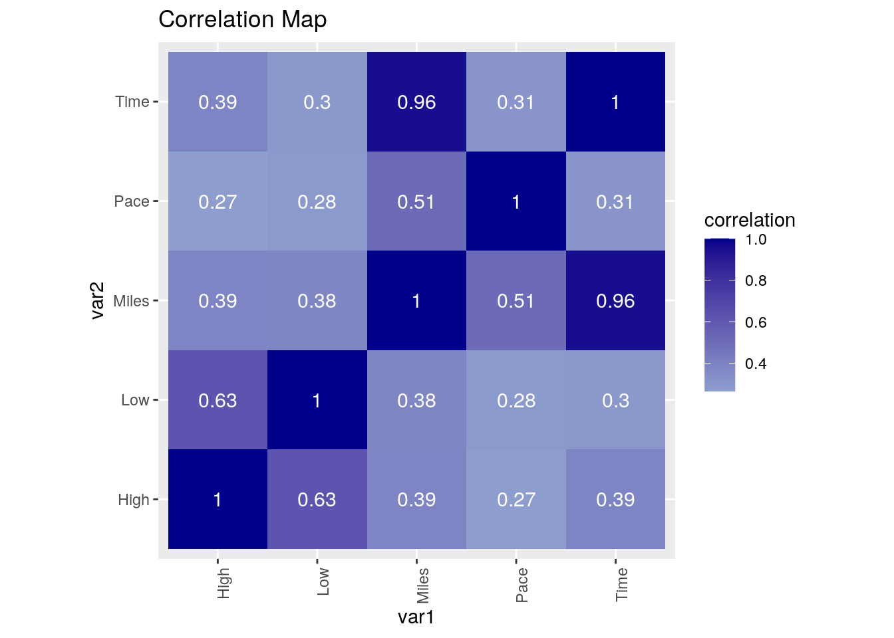
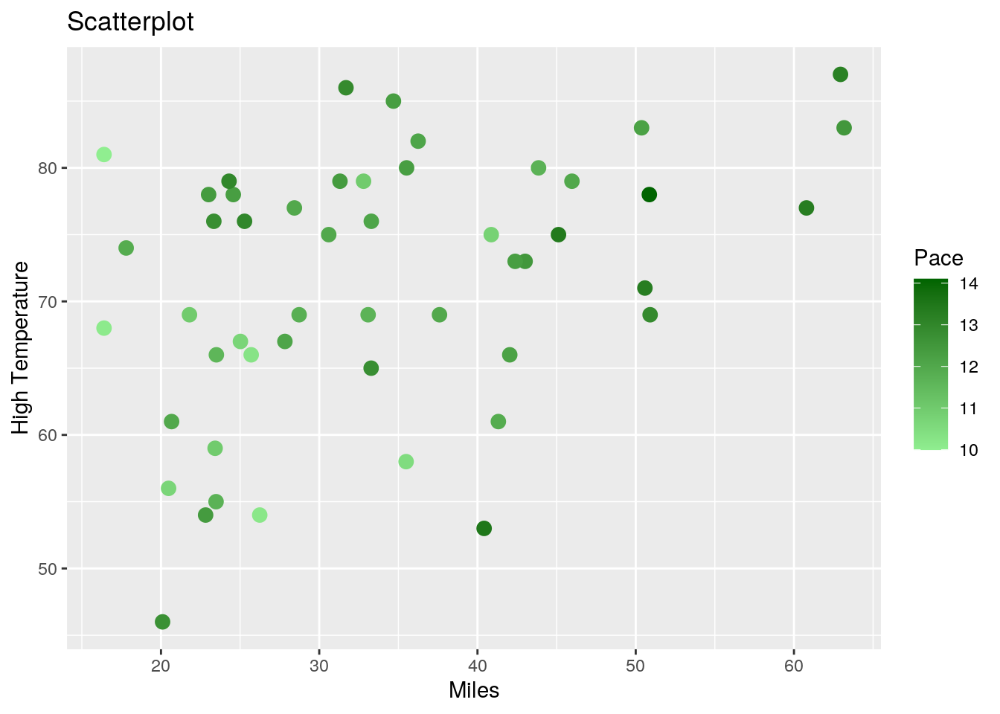
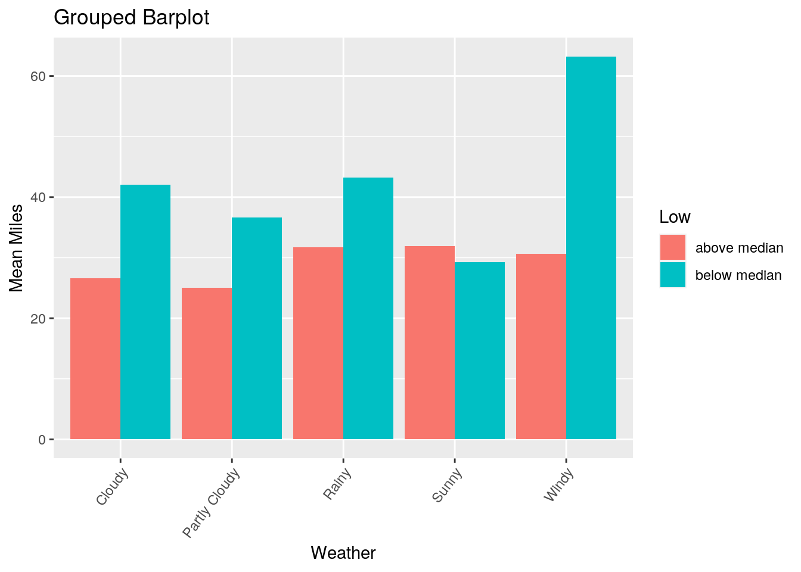
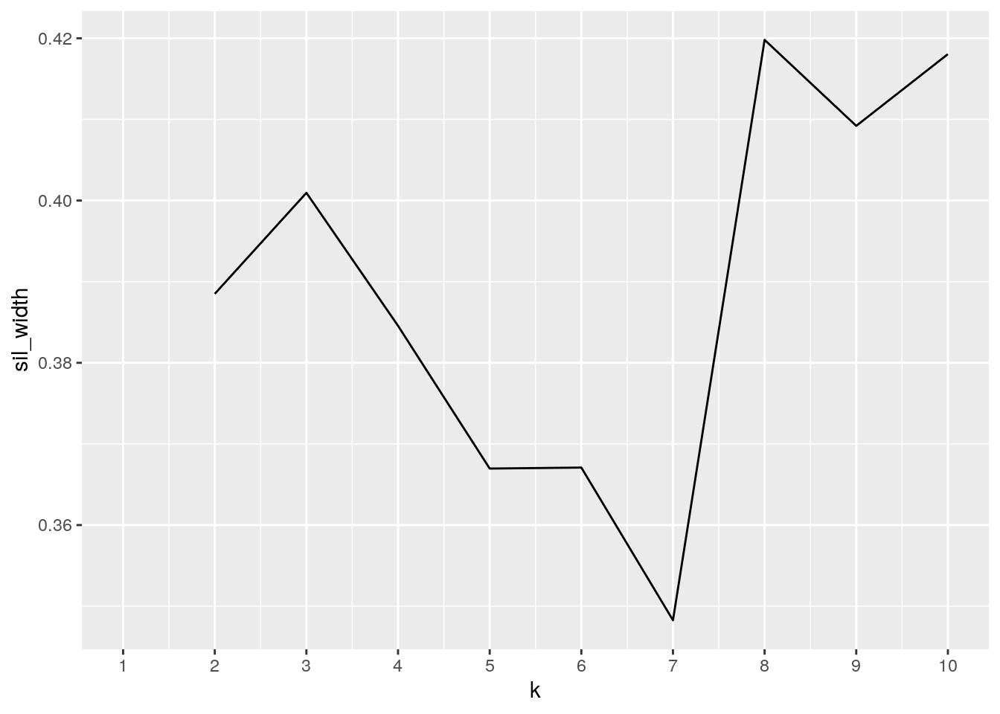
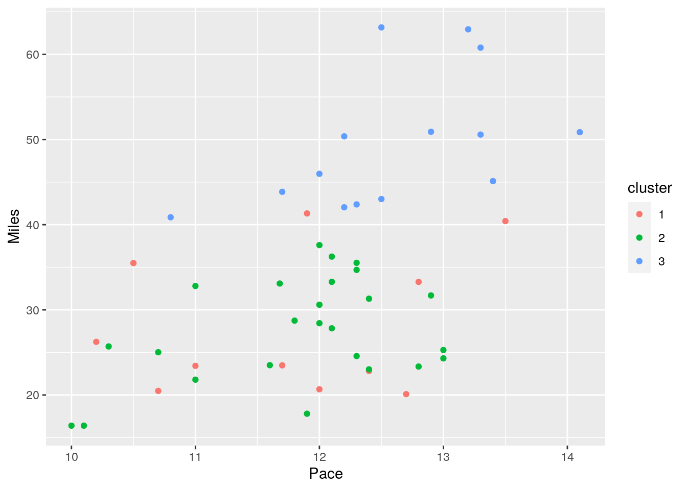
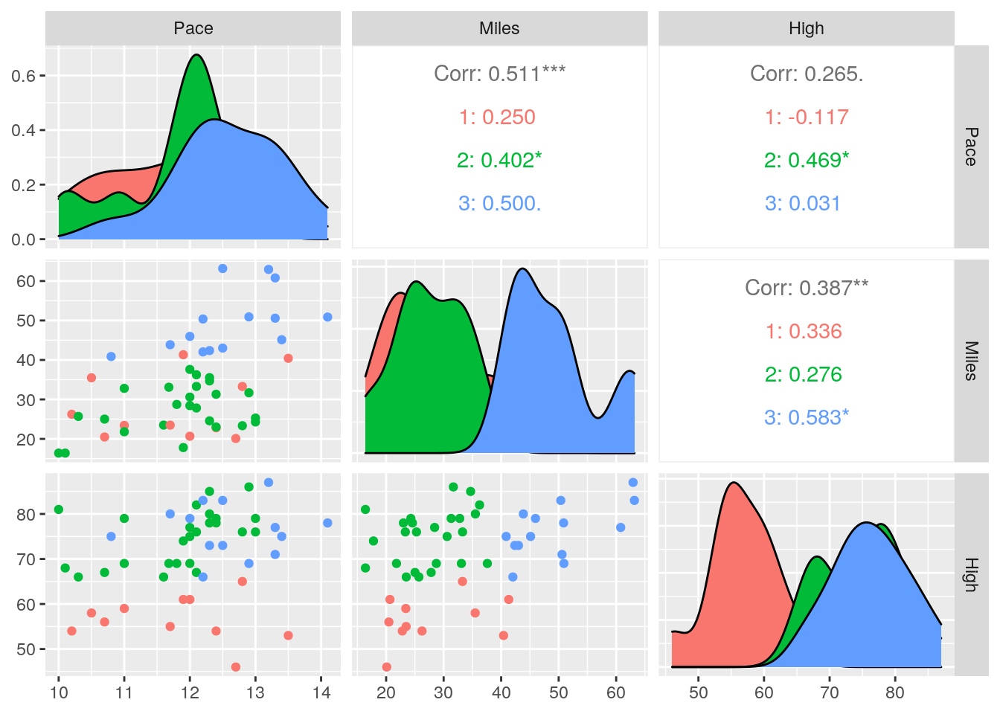

This is an R Markdown document. Markdown is a simple formatting syntax for authoring HTML, PDF, and MS Word documents. For more details on using R Markdown see http://rmarkdown.rstudio.com.
When you click the Knit button a document will be generated that includes both content as well as the output of any embedded R code chunks within the document. You can embed an R code chunk like this:
library(tidyverse)
library(Hmisc)
RMS <- read.csv("RMS.csv", header = TRUE, quote = "\"", stringsAsFactors = TRUE,
strip.white = TRUE)
Weather <- read.csv("Weather.csv", header = TRUE, quote = "\"",
stringsAsFactors = TRUE, strip.white = TRUE)I’m apart of Texas 4000 and will be biking 4,500 miles this summer in the fight against cancer! We record our rides onto this website, which was actually made by a Texas 4000 alum, which is cool. My first data set includes the date, rider, time, pace, and miles ridden. I had to get data from a couple friends since I didn’t have 50 rides by myself. The second data set includes the common variable, which is the date, as well as the low temperature, high temperature, and weather type for that day. I wanted to see if the weather had any impact on my biking data and expect the weather to impact the pace and time more than miles.
library(tidyr)
RMS %>% pivot_wider(names_from = "Rider", values_from = "Miles")## # A tibble: 50 x 6
## Date Time Pace Addison Aashna Alex
## <fct> <dbl> <dbl> <dbl> <dbl> <dbl>
## 1 11/21/20 1.5 10 16.4 NA NA
## 2 11/23/20 1.48 10.1 16.4 NA NA
## 3 11/26/20 1.98 12.3 24.6 NA NA
## 4 12/2/20 2.18 11.6 23.5 NA NA
## 5 12/3/20 2.17 11 23.4 NA NA
## 6 12/5/20 2.5 10.2 NA 26.2 NA
## 7 12/8/20 3.62 11 NA 32.8 NA
## 8 12/16/20 3.38 10.5 NA 35.5 NA
## 9 12/17/20 3.1 10.3 25.7 NA NA
## 10 12/20/20 2.42 11.8 NA 28.7 NA
## # … with 40 more rowsWider <- RMS %>% pivot_wider(names_from = "Rider", values_from = "Miles")
Wider %>% pivot_longer(c("Addison", "Aashna", "Alex"), names_to = "Rider",
values_to = "Miles") %>% na.omit(DT)## # A tibble: 50 x 5
## Date Time Pace Rider Miles
## <fct> <dbl> <dbl> <chr> <dbl>
## 1 11/21/20 1.5 10 Addison 16.4
## 2 11/23/20 1.48 10.1 Addison 16.4
## 3 11/26/20 1.98 12.3 Addison 24.6
## 4 12/2/20 2.18 11.6 Addison 23.5
## 5 12/3/20 2.17 11 Addison 23.4
## 6 12/5/20 2.5 10.2 Aashna 26.2
## 7 12/8/20 3.62 11 Aashna 32.8
## 8 12/16/20 3.38 10.5 Aashna 35.5
## 9 12/17/20 3.1 10.3 Addison 25.7
## 10 12/20/20 2.42 11.8 Aashna 28.7
## # … with 40 more rowsWeather %>% pivot_wider(names_from = "Weather", values_from = "High")## # A tibble: 50 x 7
## Date Low `Partly Cloudy` Sunny Cloudy Windy Rainy
## <fct> <int> <int> <int> <int> <int> <int>
## 1 11/21/20 65 81 NA NA NA NA
## 2 11/23/20 52 68 NA NA NA NA
## 3 11/26/20 45 NA 78 NA NA NA
## 4 12/2/20 44 NA 66 NA NA NA
## 5 12/3/20 40 NA 59 NA NA NA
## 6 12/5/20 36 54 NA NA NA NA
## 7 12/8/20 43 NA NA 79 NA NA
## 8 12/16/20 36 NA NA NA 58 NA
## 9 12/17/20 30 NA NA NA 66 NA
## 10 12/20/20 42 NA 69 NA NA NA
## # … with 40 more rowsWiderWeather <- Weather %>% pivot_wider(names_from = "Weather",
values_from = "High")
WiderWeather %>% pivot_longer(c("Partly Cloudy", "Sunny", "Cloudy",
"Windy", "Rainy"), names_to = "Weather.Type", values_to = "High") %>%
na.omit(DT)## # A tibble: 50 x 4
## Date Low Weather.Type High
## <fct> <int> <chr> <int>
## 1 11/21/20 65 Partly Cloudy 81
## 2 11/23/20 52 Partly Cloudy 68
## 3 11/26/20 45 Sunny 78
## 4 12/2/20 44 Sunny 66
## 5 12/3/20 40 Sunny 59
## 6 12/5/20 36 Partly Cloudy 54
## 7 12/8/20 43 Cloudy 79
## 8 12/16/20 36 Windy 58
## 9 12/17/20 30 Windy 66
## 10 12/20/20 42 Sunny 69
## # … with 40 more rowsMy data was already pretty tidy since I made them myself, which was a tedious process, but it did make the overall project easier. Using pivot wider, I expanded the first data set to separate out each rider’s bike data because even though we do bike the same routes, there are little differences between each rider. I then used pivot longer to restore it back to the original data. For the second data set, I expanded the specific weather types with their high temperatures for the day to see if there was any relation there. I noticed there were more partly cloudy days, and that temperatures tended to be higher when sunny and lower when windy. I then used the pivot longer function again to restore it back to the original data.
RMS %>% left_join(Weather)## Date Time Pace Miles Rider Low High Weather
## 1 11/21/20 1.50 10.0 16.40 Addison 65 81 Partly Cloudy
## 2 11/23/20 1.48 10.1 16.40 Addison 52 68 Partly Cloudy
## 3 11/26/20 1.98 12.3 24.57 Addison 45 78 Sunny
## 4 12/2/20 2.18 11.6 23.50 Addison 44 66 Sunny
## 5 12/3/20 2.17 11.0 23.42 Addison 40 59 Sunny
## 6 12/5/20 2.50 10.2 26.24 Aashna 36 54 Partly Cloudy
## 7 12/8/20 3.62 11.0 32.80 Aashna 43 79 Cloudy
## 8 12/16/20 3.38 10.5 35.49 Aashna 36 58 Windy
## 9 12/17/20 3.10 10.3 25.70 Addison 30 66 Windy
## 10 12/20/20 2.42 11.8 28.73 Aashna 42 69 Sunny
## 11 12/22/20 2.92 12.0 30.60 Addison 43 75 Rainy
## 12 12/23/20 2.98 12.1 36.25 Aashna 47 82 Partly Cloudy
## [ reached 'max' / getOption("max.print") -- omitted 38 rows ]Combined <- RMS %>% left_join(Weather)I joined the two data sets together based on the common categorical variable, date. I decided to do left join because I wanted the merge to return all of the rows from the left side.
Combined %>% filter(Weather == "Sunny")## Date Time Pace Miles Rider Low High Weather
## 1 11/26/20 1.98 12.3 24.57 Addison 45 78 Sunny
## 2 12/2/20 2.18 11.6 23.50 Addison 44 66 Sunny
## 3 12/3/20 2.17 11.0 23.42 Addison 40 59 Sunny
## 4 12/20/20 2.42 11.8 28.73 Aashna 42 69 Sunny
## 5 1/18/21 3.80 10.8 40.87 Addison 37 75 Sunny
## 6 1/19/21 1.98 11.0 21.80 Alex 50 69 Sunny
## 7 1/20/21 2.00 11.7 23.48 Addison 48 55 Sunny
## 8 3/18/21 3.43 12.3 42.38 Alex 47 73 Sunny
## 9 3/19/21 3.78 13.3 50.58 Alex 46 71 SunnyCombined %>% arrange(desc(Miles))## Date Time Pace Miles Rider Low High Weather
## 1 3/16/21 5.15 12.5 63.17 Alex 67 83 Windy
## 2 3/15/21 4.77 13.2 62.94 Addison 47 87 Partly Cloudy
## 3 3/13/21 4.57 13.3 60.79 Addison 68 77 Rainy
## 4 3/6/21 3.93 12.9 50.91 Addison 49 69 Partly Cloudy
## 5 3/14/21 3.60 14.1 50.86 Addison 53 78 Cloudy
## 6 3/19/21 3.78 13.3 50.58 Alex 46 71 Sunny
## 7 3/10/21 4.10 12.2 50.37 Addison 64 83 Partly Cloudy
## 8 2/27/21 3.82 12.0 45.97 Addison 58 79 Rainy
## 9 2/6/21 3.37 13.4 45.12 Alex 48 75 Partly Cloudy
## 10 1/30/21 3.75 11.7 43.86 Addison 53 80 Partly Cloudy
## 11 3/3/21 3.45 12.5 43.01 Addison 38 73 Rainy
## 12 3/18/21 3.43 12.3 42.38 Alex 47 73 Sunny
## [ reached 'max' / getOption("max.print") -- omitted 38 rows ]Combined %>% select(Date, Miles, Rider, Weather)## Date Miles Rider Weather
## 1 11/21/20 16.40 Addison Partly Cloudy
## 2 11/23/20 16.40 Addison Partly Cloudy
## 3 11/26/20 24.57 Addison Sunny
## 4 12/2/20 23.50 Addison Sunny
## 5 12/3/20 23.42 Addison Sunny
## 6 12/5/20 26.24 Aashna Partly Cloudy
## 7 12/8/20 32.80 Aashna Cloudy
## 8 12/16/20 35.49 Aashna Windy
## 9 12/17/20 25.70 Addison Windy
## 10 12/20/20 28.73 Aashna Sunny
## 11 12/22/20 30.60 Addison Rainy
## 12 12/23/20 36.25 Aashna Partly Cloudy
## 13 1/1/21 40.42 Alex Rainy
## 14 1/8/21 22.82 Aashna Cloudy
## 15 1/13/21 25.02 Alex Rainy
## 16 1/14/21 33.09 Aashna Cloudy
## 17 1/18/21 40.87 Addison Sunny
## 18 1/19/21 21.80 Alex Sunny
## 19 1/20/21 23.48 Addison Sunny
## 20 1/22/21 23.01 Addison Rainy
## 21 1/23/21 41.32 Addison Partly Cloudy
## 22 1/25/21 23.34 Aashna Partly Cloudy
## 23 1/27/21 33.28 Aashna Rainy
## 24 1/28/21 20.48 Alex Partly Cloudy
## 25 1/29/21 37.60 Alex Partly Cloudy
## [ reached 'max' / getOption("max.print") -- omitted 25 rows ]Combined %>% group_by(Pace, Miles)## # A tibble: 50 x 8
## # Groups: Pace, Miles [50]
## Date Time Pace Miles Rider Low High Weather
## <fct> <dbl> <dbl> <dbl> <fct> <int> <int> <fct>
## 1 11/21/20 1.5 10 16.4 Addison 65 81 Partly Cloudy
## 2 11/23/20 1.48 10.1 16.4 Addison 52 68 Partly Cloudy
## 3 11/26/20 1.98 12.3 24.6 Addison 45 78 Sunny
## 4 12/2/20 2.18 11.6 23.5 Addison 44 66 Sunny
## 5 12/3/20 2.17 11 23.4 Addison 40 59 Sunny
## 6 12/5/20 2.5 10.2 26.2 Aashna 36 54 Partly Cloudy
## 7 12/8/20 3.62 11 32.8 Aashna 43 79 Cloudy
## 8 12/16/20 3.38 10.5 35.5 Aashna 36 58 Windy
## 9 12/17/20 3.1 10.3 25.7 Addison 30 66 Windy
## 10 12/20/20 2.42 11.8 28.7 Aashna 42 69 Sunny
## # … with 40 more rowszscore <- function(x) (x - mean(x, na.rm = T))/sd(x, na.rm = T)
Combined %>% mutate_at(c("Miles"), list(z = zscore))## Date Time Pace Miles Rider Low High Weather z
## 1 11/21/20 1.50 10.0 16.40 Addison 65 81 Partly Cloudy -1.4414829
## 2 11/23/20 1.48 10.1 16.40 Addison 52 68 Partly Cloudy -1.4414829
## 3 11/26/20 1.98 12.3 24.57 Addison 45 78 Sunny -0.7642906
## 4 12/2/20 2.18 11.6 23.50 Addison 44 66 Sunny -0.8529804
## 5 12/3/20 2.17 11.0 23.42 Addison 40 59 Sunny -0.8596114
## 6 12/5/20 2.50 10.2 26.24 Aashna 36 54 Partly Cloudy -0.6258682
## 7 12/8/20 3.62 11.0 32.80 Aashna 43 79 Cloudy -0.0821251
## 8 12/16/20 3.38 10.5 35.49 Aashna 36 58 Windy 0.1408427
## 9 12/17/20 3.10 10.3 25.70 Addison 30 66 Windy -0.6706276
## 10 12/20/20 2.42 11.8 28.73 Aashna 42 69 Sunny -0.4194779
## 11 12/22/20 2.92 12.0 30.60 Addison 43 75 Rainy -0.2644780
## [ reached 'max' / getOption("max.print") -- omitted 39 rows ]Combined %>% summarize_all(n_distinct)## Date Time Pace Miles Rider Low High Weather
## 1 50 47 28 49 3 27 28 5median(Combined$Miles)## [1] 32.245mean(Combined$Pace[Combined$Miles > 32.245])## [1] 12.3432sd(Combined$Low[Combined$Miles < 32.245])## [1] 8.541467quantile(Combined$Pace)## 0% 25% 50% 75% 100%
## 10.000 11.685 12.100 12.650 14.100min(Combined$Miles[Combined$Pace > 12.65])## [1] 20.1Groupbyweather <- group_by(Combined, Weather)
summarise(Groupbyweather, Pace = mean(Pace, na.rm = TRUE))## # A tibble: 5 x 2
## Weather Pace
## <fct> <dbl>
## 1 Cloudy 12.2
## 2 Partly Cloudy 12.0
## 3 Rainy 12.4
## 4 Sunny 11.8
## 5 Windy 11.1Groupbyrider <- group_by(Combined, Rider)
summarise(Groupbyrider, Miles = mean(Miles, na.rm = TRUE))## # A tibble: 3 x 2
## Rider Miles
## <fct> <dbl>
## 1 Aashna 30.0
## 2 Addison 34.2
## 3 Alex 37.0Using the filter function, I only wanted to look at the data when the weather was Sunny. It was interesting because even though the dates for the Sunny observations took place from late November to mid March, there wasn’t a huge range in regards to the low and high temperatures. With the arrange function, I arranged the Miles variable in descending order. I noticed that as the number of miles increased, the pace did was well, which I attribute to gaining skill over time while biking. For the select function, I wanted to see a more concise data set, so I just looked at the date, miles, rider, and weather type. For the group by function, I grouped it by the two variables pace and miles . With the mutate function, I made a new variable that was the z-score for miles, so I could see the value’s relationship to the mean.
For summary statistics, I started with the median for miles, which was 32.25 miles. Then, for rides greater than this, I wanted to see the mean pace, which was 12.34 miles. For rides less than the median miles, I wanted to see the standard deviation for the low temperature of that day, which was 8.54. Additionally, I found the quantiles for pace. I then found the minimum miles when the pace was greater than the 75th percentile and found that to be 20.1 miles.
After grouping the categorical variable, weather, I used the summarize function to find the mean pace for each weather type. The highest mean pace was for rainy weather, which is honestly surprising considering we bike more cautiously when it rains. After grouping the categorical variable, rider, I used the summarize function to find the mean miles for each of us. Despite my friend Alex having less observations in the data set compared to me and Aashna, he still had the highest mean miles out of us three.
cormat <- Combined %>% select_if(is.numeric) %>% cor(use = "pair")
tidycor <- cormat %>% as.data.frame %>% rownames_to_column("var1") %>%
pivot_longer(-1, names_to = "var2", values_to = "correlation")
tidycor %>% ggplot(aes(var1, var2, fill = correlation)) + geom_tile() +
scale_fill_gradient2(low = "white", mid = "lightblue", high = "darkblue") +
geom_text(aes(label = round(correlation, 2)), color = "white",
size = 4) + theme(axis.text.x = element_text(angle = 90,
hjust = 1)) + coord_fixed() + ggtitle("Correlation Map")
ggplot(data = Combined, aes(x = Miles, y = High)) + geom_point(size = 3,
aes(color = Pace)) + xlab("Miles") + ylab("High Temperature") +
labs(color = "Pace") + scale_color_gradient(low = "lightgreen",
high = "darkgreen") + ggtitle("Scatterplot")
ggplot(Combined, aes(x = Weather)) + geom_bar(aes(y = Miles,
fill = ifelse(Low > median(Low), "below median", "above median")),
position = "dodge", stat = "summary", fun = mean) + theme(axis.text.x = element_text(angle = 53,
hjust = 1)) + xlab("Weather") + ylab("Mean Miles") + labs(fill = "Low") +
ggtitle("Grouped Barplot")
The correlation heat map shows the correlations between my five numeric variables, and they are all positive. For the low and high temperatures, there’s a decently strong correlation, which makes sense because they would increase or decrease together accordingly. Both the time, miles, and pace variable has a low correlation with both high and low temperature, which I think can be attributed to the fact that miles are pretty set in stone regardless of weather and our pace is pretty constant but can still vary. There is a slight correlation between pace and miles, which makes sense because as training progresses, the miles increases as does our pace. There is a very strong correlation between time and miles as the amount of time it takes to bike further will increase.
The scatter plot shows the relationship between miles, high temperature, and pace. There is a slightly positive correlation with miles and temperatures, which makes sense because biking in warmer weather is overall more enjoyable. Regarding pace, there seem to be darker dots, which indicates a faster pace, when more miles are ridden as well as with higher temperature. I think this could be explained also by the temperature being in the seventies and eighties making it more enjoyable to bike and do so at a quicker pace.
The third plot is a grouped bar plot that shows the relationship between the weather type, mean miles, and low temperature. The red bar shows the low temperature below the median while the blue bar shows the temperature above the median. When looking at the various weather types, the mean miles below the median low temperature was higher than above the median temperature, which I thought was interesting. The windy weather type especially had a noticeable difference.
library(cluster)
select(Combined, Pace, Miles, High)## Pace Miles High
## 1 10.00 16.40 81
## 2 10.10 16.40 68
## 3 12.30 24.57 78
## 4 11.60 23.50 66
## 5 11.00 23.42 59
## 6 10.20 26.24 54
## 7 11.00 32.80 79
## 8 10.50 35.49 58
## 9 10.30 25.70 66
## 10 11.80 28.73 69
## 11 12.00 30.60 75
## 12 12.10 36.25 82
## 13 13.50 40.42 53
## 14 12.40 22.82 54
## 15 10.70 25.02 67
## 16 11.68 33.09 69
## 17 10.80 40.87 75
## 18 11.00 21.80 69
## 19 11.70 23.48 55
## 20 12.40 23.01 78
## 21 11.90 41.32 61
## 22 12.80 23.34 76
## 23 12.80 33.28 65
## 24 10.70 20.48 56
## 25 12.00 37.60 69
## 26 11.70 43.86 80
## 27 12.10 27.83 67
## 28 12.00 28.43 77
## 29 12.30 34.69 85
## 30 12.00 20.67 61
## 31 13.40 45.12 75
## 32 12.10 33.29 76
## 33 12.70 20.10 46
## [ reached 'max' / getOption("max.print") -- omitted 17 rows ]clust_dat <- select(Combined, Pace, Miles, High)
sil_width <- vector()
for (i in 2:10) {
kms <- kmeans(clust_dat, centers = i)
sil <- silhouette(kms$cluster, dist(clust_dat))
sil_width[i] <- mean(sil[, 3])
}
ggplot() + geom_line(aes(x = 1:10, y = sil_width)) + scale_x_continuous(name = "k",
breaks = 1:10)
kmeans1 <- clust_dat %>% kmeans(3)
kmeans1## K-means clustering with 3 clusters of sizes 11, 25, 14
##
## Cluster means:
## Pace Miles High
## 1 11.76364 27.97455 56.54545
## 2 11.83120 27.55800 74.84000
## 3 12.60000 49.49071 76.35714
##
## Clustering vector:
## [1] 2 2 2 2 1 1 2 1 2 2 2 2 1 1 2 2 3 2 1 2 1 2 1 1 2 3 2 2 2 1 3 2 1 2 2 2 3 3
## [39] 3 2 3 2 3 3 3 3 3 3 3 2
##
## Within cluster sum of squares by cluster:
## [1] 929.609 1796.365 1237.499
## (between_SS / total_SS = 66.5 %)
##
## Available components:
##
## [1] "cluster" "centers" "totss" "withinss" "tot.withinss"
## [6] "betweenss" "size" "iter" "ifault"kmeansclust <- clust_dat %>% as.data.frame %>% mutate(cluster = as.factor(kmeans1$cluster))
kmeansclust## Pace Miles High cluster
## 1 10.00 16.40 81 2
## 2 10.10 16.40 68 2
## 3 12.30 24.57 78 2
## 4 11.60 23.50 66 2
## 5 11.00 23.42 59 1
## 6 10.20 26.24 54 1
## 7 11.00 32.80 79 2
## 8 10.50 35.49 58 1
## 9 10.30 25.70 66 2
## 10 11.80 28.73 69 2
## 11 12.00 30.60 75 2
## 12 12.10 36.25 82 2
## 13 13.50 40.42 53 1
## 14 12.40 22.82 54 1
## 15 10.70 25.02 67 2
## 16 11.68 33.09 69 2
## 17 10.80 40.87 75 3
## 18 11.00 21.80 69 2
## 19 11.70 23.48 55 1
## 20 12.40 23.01 78 2
## 21 11.90 41.32 61 1
## 22 12.80 23.34 76 2
## 23 12.80 33.28 65 1
## 24 10.70 20.48 56 1
## 25 12.00 37.60 69 2
## [ reached 'max' / getOption("max.print") -- omitted 25 rows ]kmeansclust %>% ggplot(aes(Pace, Miles, High, color = cluster)) +
geom_point()
library(GGally)
ggpairs(kmeansclust, columns = 1:3, aes(color = cluster)) The three numeric variables I selected were pace, miles, and high temperature. I wanted to use three clusters and used the silhouette with indexes running the clusters from 2 to 10 and decided which three clusters I wanted to use. I piped kmeans(3) then used the mutate function back to the original data set. A ggplot was made to make a scatter plot of the clusters with pace as the x variable and miles as the y variable. Next, ggpairs was used to make nine graphs with the three variables. For the scatter plot where pace is the x-axis and high temperature is the y-axis, miles was the variable measured by the scatter plot. The red cluster shows that a higher number miles are seen at the lower side of high temperatures, but not really associated with pace. The blue and green cluster overlap showing that both medium and lower amount of miles are seen with the higher side of high temperatures, but again not really associated with pace. For the graph where miles is the x-axis and high temperature is the y-axis, the clusters represent the pace. The red cluster, which represents a faster pace is closer to the lower side of the high temperature and less miles. The green and blue cluster, which are medium and low pace respectively, are associated with a higher temperature, but the blue cluster is closer to less miles and green is closer to more miles. For the graph with pace as the x-axis and miles as the y-axis, the clusters represent the high temperature of that day. The red and blue clusters, which are higher and lower high temperatures overlap near lower miles, but don’t seem to be associated with pace. The green clusters, which represent medium high temperatures are closer to a higher pace and miles. The color filled graphs show the same information, and the three correlation graphs show the correlation between the three variables.